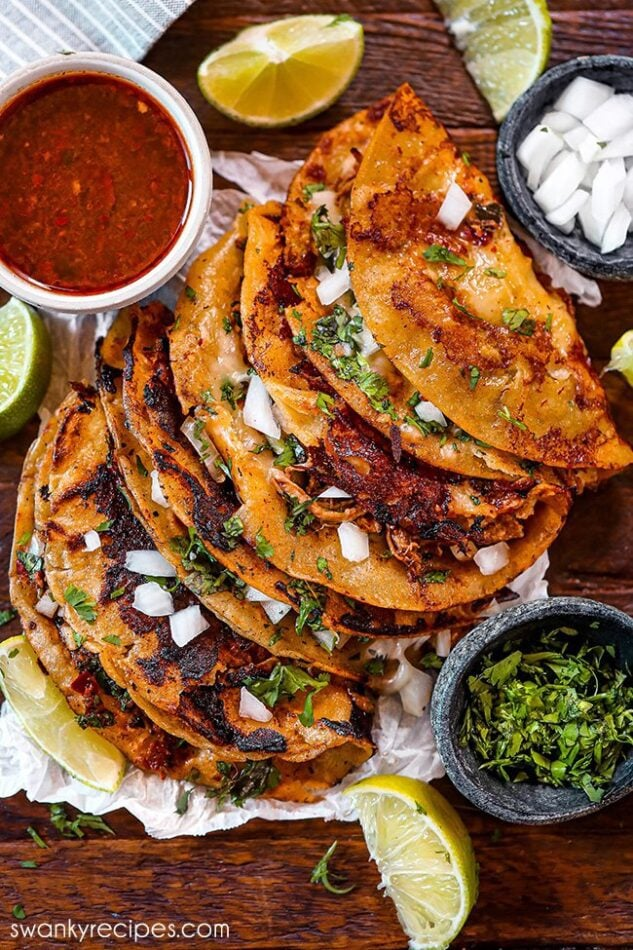

Birria Tacos

Description
Today we will be showing you how to make the best Birria Tacos.
Ingredients
- Short Ribs (BONE IN!)
- Carrots
- Bay Leaves
- Oregano
- Cumin
- Salt
- Chili Powder
- White Onion
- Garlic
- Corn Tortillas
- Chicken Bouillon
- Quesadilla Cheese
- Guajillo Peppers
- Chuck Roast
Steps
- Simmer
- Blend Peppers
- Continue to simmer
- Chop the meat
- Use leftover grease
- Fry tortillas
- Serve with consomme